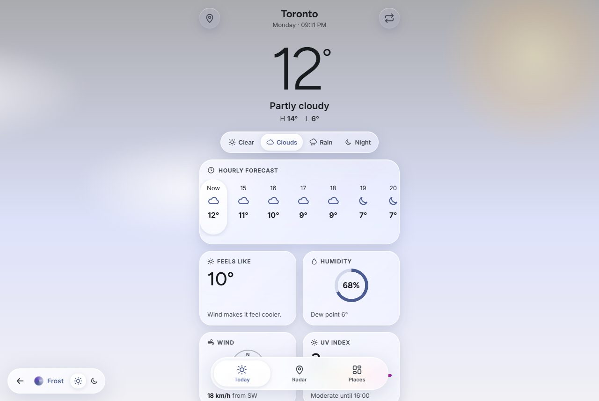
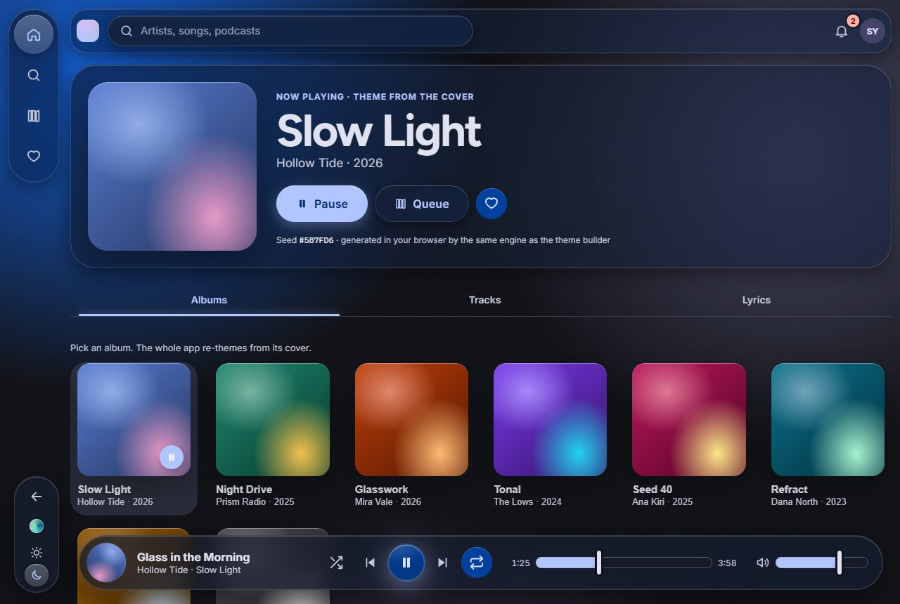
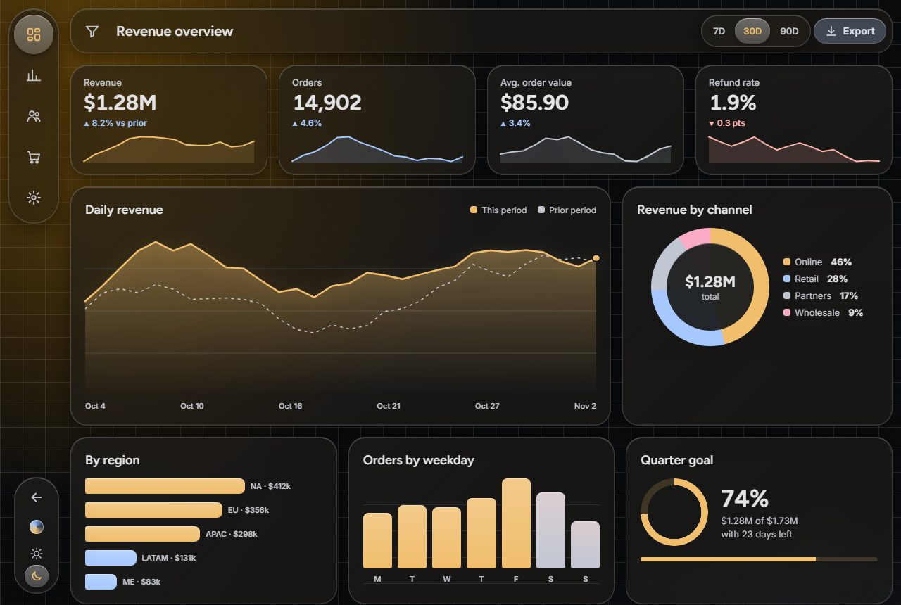
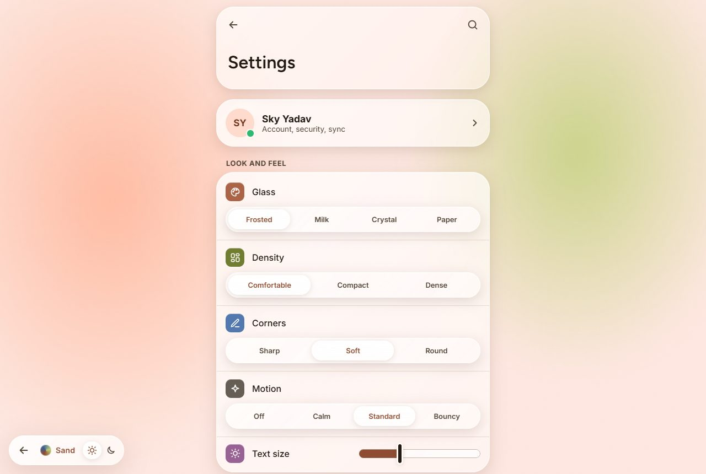
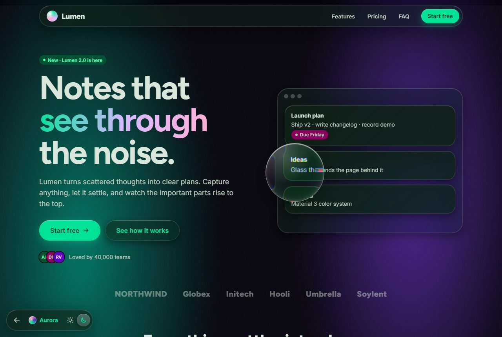

Built with it
Real screens, not component swatches. Each one is a single static page using the published CSS and script. Open one, then switch themes from its floating bar.

Weather
A sky that changes with the forecast, liquid navigation and a refracting radar lens.
FrostPhone

Music
Pick an album and the whole app re-themes from its cover colour, generated live in the browser.
Theme generatorDesktop + phone

Analytics dashboard
KPIs with sparklines, trend and breakdown charts, filters in a side sheet and a sortable table with CSV export.
ObsidianData

Settings
Every input in a realistic list. Its own glass, density, corner and motion switches restyle the screen.
SandCustomization

Landing page
A template for a product site: hero with lens, features with pointer light, pricing, FAQ and sign-up.
AuroraTemplate